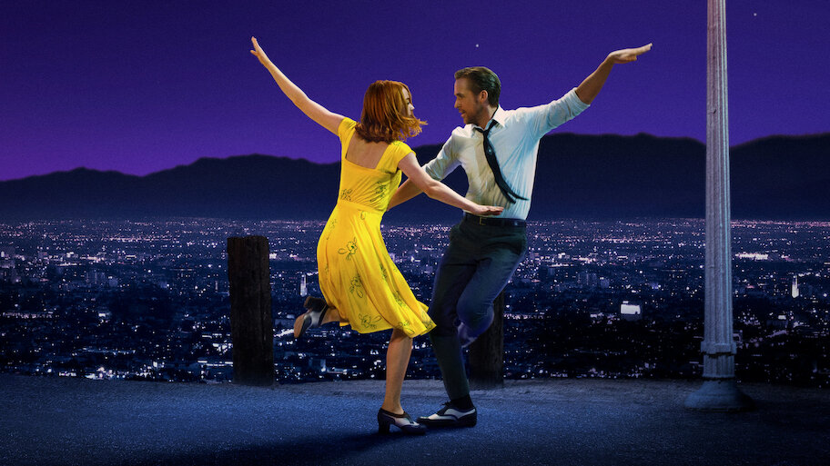
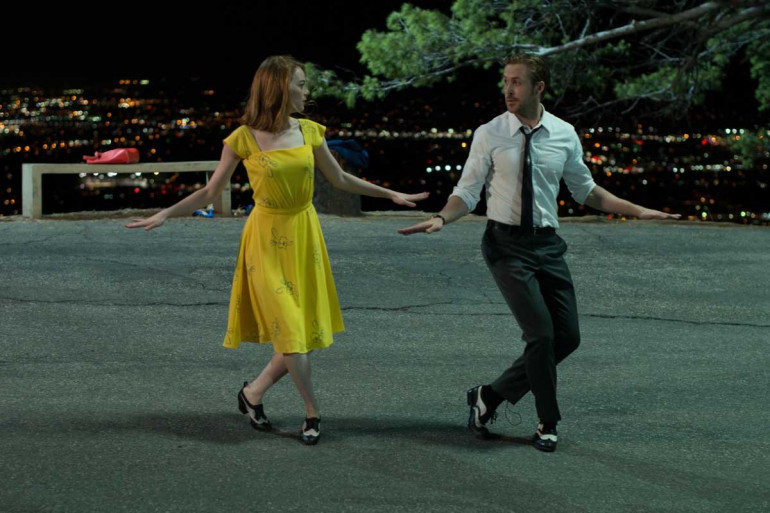
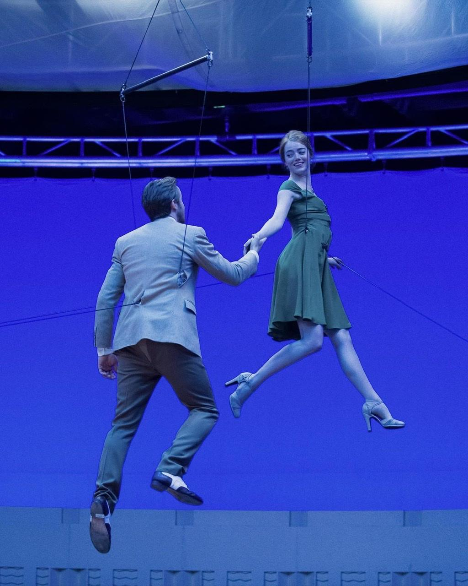
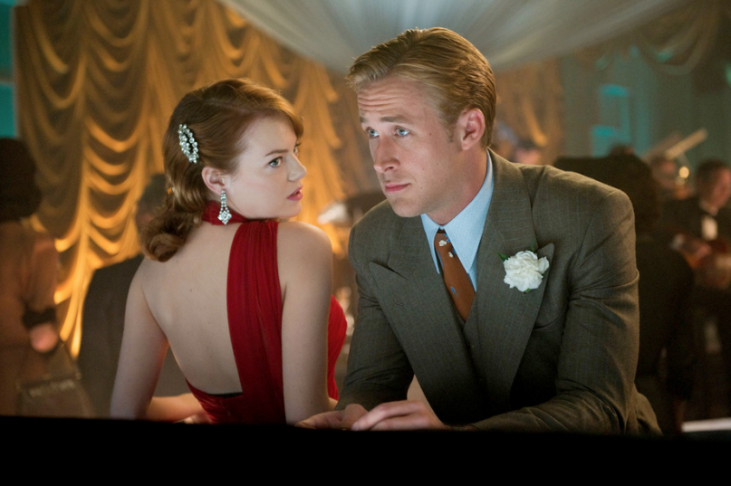
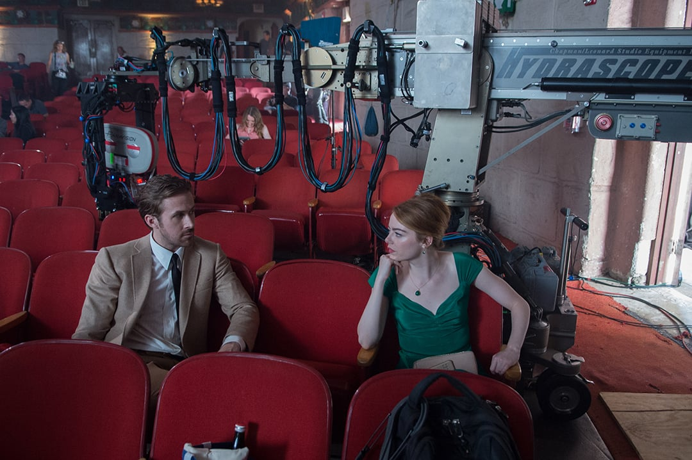
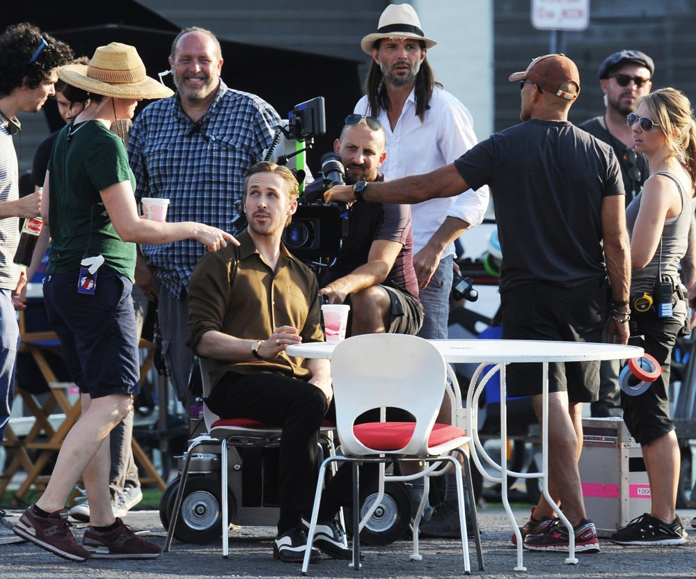
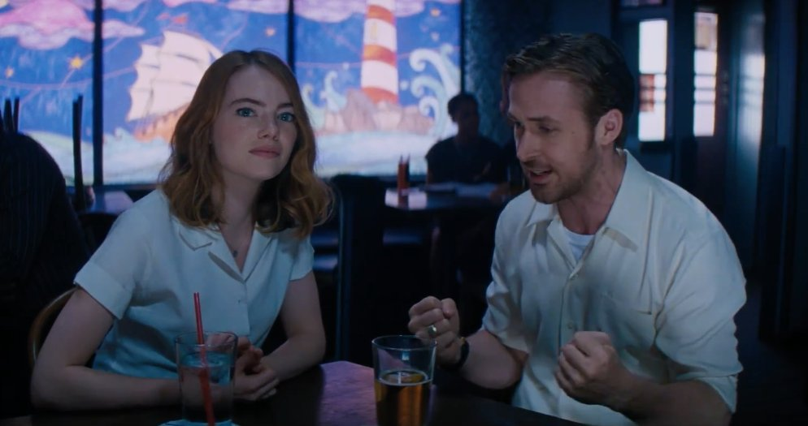

Faits divers
Le tournage de "La La Land" en 2016 a transformé Los Angeles en plateau de cinéma géant. La séquence d'ouverture avec 100 danseurs a nécessité la fermeture d'une section d'autoroute pendant plusieurs heures. Cette production de Damien Chazelle a généré 15 millions de dollars de retombées économiques et employé 3000 personnes.
448M$
Recettes mondiales
14
Nominations aux Oscars
6
Oscars remportés
128
Minutes de film






Présentation de la direction artistique
Découvrez les secrets de création et les choix artistiques qui ont donné vie à l'univers visuel et musical de La La Land, à travers les témoignages de l'équipe créative.
La direction artistique de La La Land s'inspire des comédies musicales classiques d'Hollywood tout en apportant une touche contemporaine. Chaque couleur, chaque costume et chaque décor ont été soigneusement choisis pour créer une atmosphère onirique qui reflète les rêves et les aspirations des personnages principaux. L'utilisation de palettes de couleurs vives et contrastées permet de distinguer les différentes émotions et phases narratives du film.
La création des costumes pour La La Land nécessitait un équilibre délicat entre l'élégance classique et la modernité. Chaque tenue devait permettre une liberté de mouvement totale pour les séquences dansées, tout en reflétant la personnalité et l'évolution des personnages. La célèbre robe jaune d'Emma Stone, par exemple, est devenue iconique grâce à sa capacité à capturer la lumière et à créer un impact visuel saisissant.
La bande sonore de La La Land a été conçue en parfaite harmonie avec les éléments visuels. Chaque mélodie correspond à une palette de couleurs spécifique, et les mouvements de caméra suivent le rythme musical. Cette synergie entre son et image crée une expérience cinématographique immersive où chaque note résonne avec les choix esthétiques du film.
Les séquences de danse de La La Land combinent chorégraphie traditionnelle et innovation technique moderne. L'utilisation de grues et de steadicams permet des mouvements de caméra fluides qui accompagnent parfaitement les danseurs. L'éclairage dynamique et les changements de décors en temps réel créent une magie visuelle qui transporte le spectateur dans l'univers des personnages.
Les décors de La La Land ne sont pas de simples arrière-plans, mais de véritables personnages qui évoluent avec l'histoire. De l'observatoire Griffith au café de Mia, chaque lieu raconte une partie de l'histoire d'amour et des rêves brisés. L'architecture de Los Angeles devient ainsi le témoin silencieux des espoirs et des désillusions des protagonistes.
La La Land multiplie les références aux grands classiques du cinéma musical américain, de "Singin' in the Rain" à "Casablanca". Ces hommages se retrouvent dans les cadrages, les mouvements de caméra, et même dans certains dialogues, créant un pont entre l'âge d'or d'Hollywood et le cinéma contemporain.
Le tournage de La La Land a nécessité une coordination parfaite entre les équipes technique, artistique et musicale. La synchronisation des playbacks, l'éclairage des séquences nocturnes, et la gestion des foules lors des scènes de groupe ont représenté des défis majeurs relevés avec brio par l'équipe de production.
Emma Stone et Ryan Gosling ont suivi plusieurs mois de préparation intensive incluant des cours de chant, de danse et de piano. Cette formation leur a permis d'interpréter leurs propres chansons et de réaliser eux-mêmes la plupart des chorégraphies, apportant une authenticité rare aux performances musicales du film.
La photographie de La La Land utilise des contrastes saisissants entre les tons chauds et froids pour exprimer les émotions des personnages. Les couchers de soleil dorés de Los Angeles contrastent avec les bleus profonds de la nuit, créant une esthétique visuelle qui soutient parfaitement la narration émotionnelle du film.
La post-production de La La Land a nécessité un travail minutieux sur l'étalonnage des couleurs et la synchronisation audio-vidéo. Les effets visuels subtils, comme l'extension des décors et l'amélioration des éclairages, ont été intégrés de manière imperceptible pour préserver l'authenticité des performances tout en magnifiant l'aspect visuel du film.